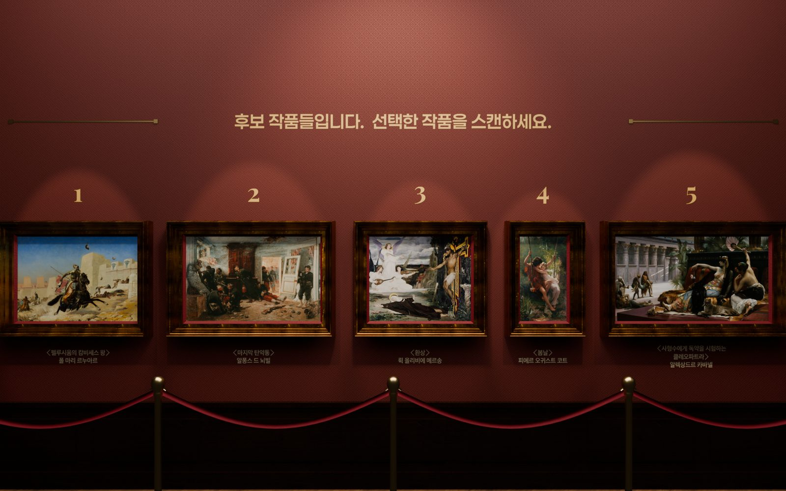
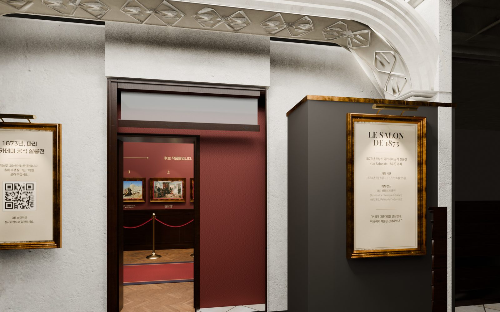
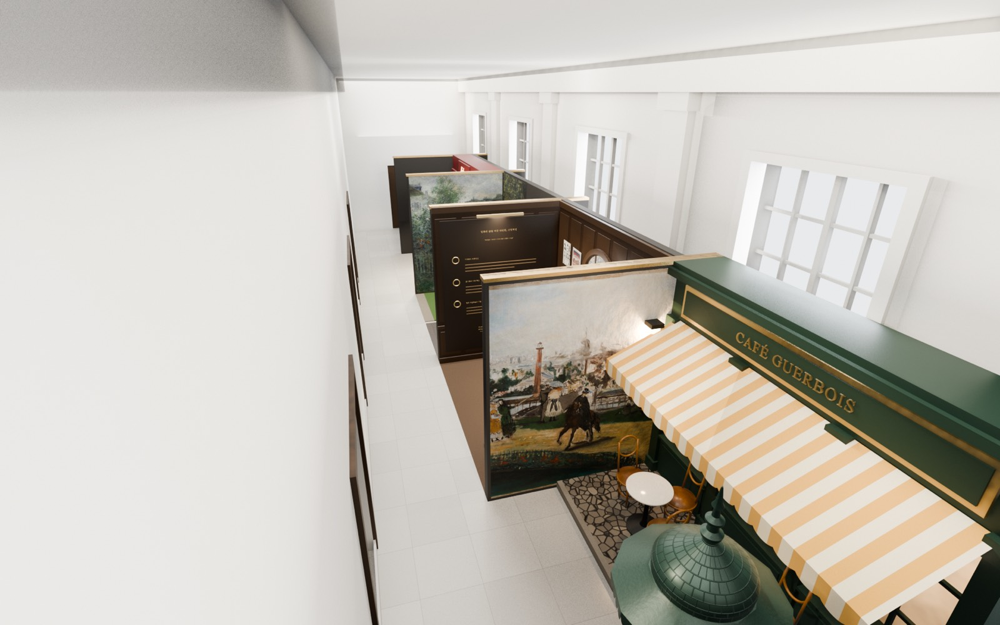
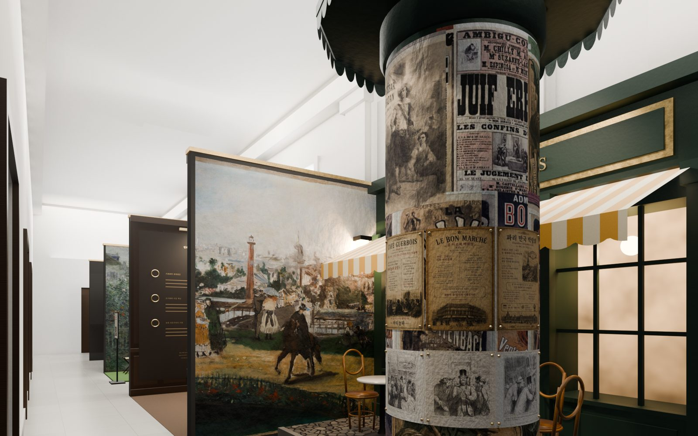
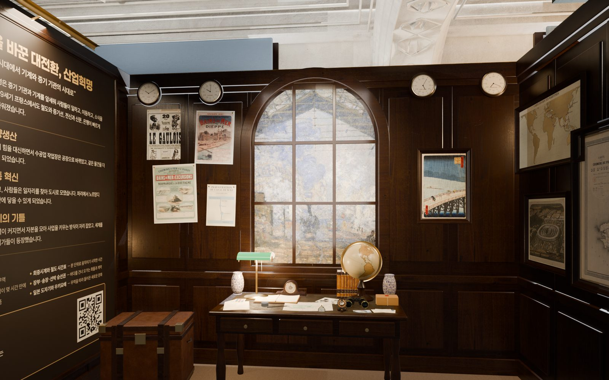
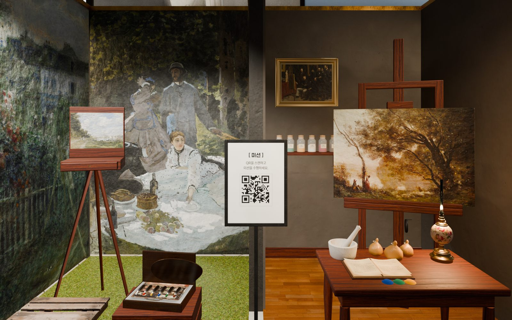
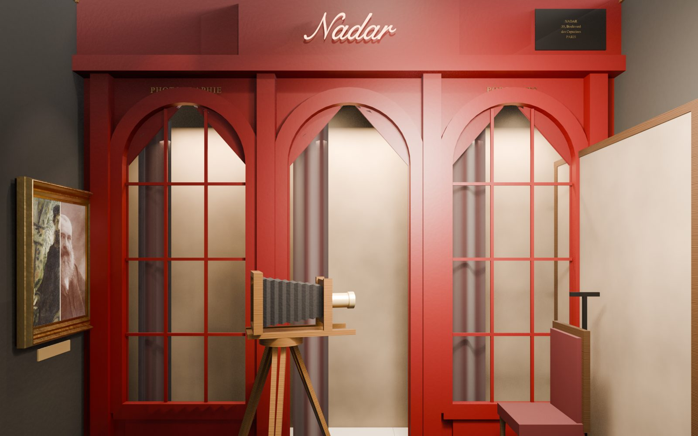
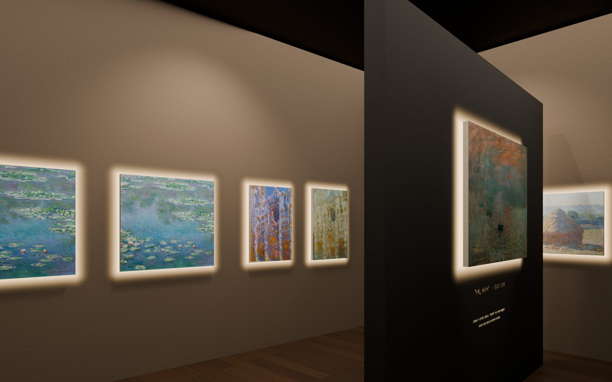
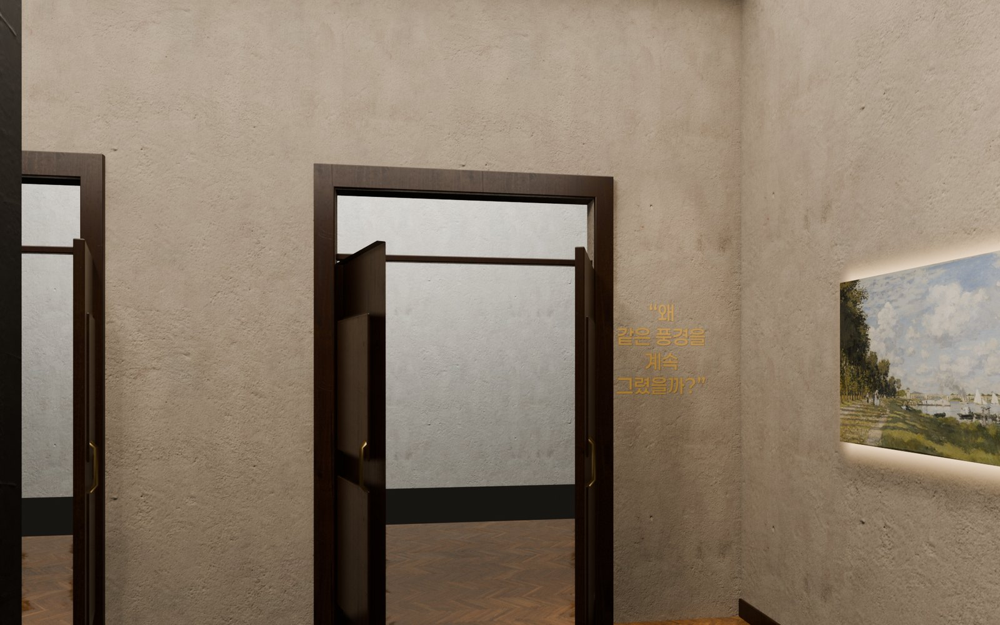

체험 구성안
4층 여섯 개 체험의 공간과 체험장치 구성입니다. 공간 시각화 위 번호는 아래 '체험장치 구성'의 번호와 같고, 맨 위 3D 화면에서 평면도나 구역 버튼을 누르면 그 공간으로 이동해 돌려보고 확대해 볼 수 있습니다.
평면도에 축척 표기가 없어, 공간 치수는 에스컬레이터 길이를 기준으로 역산한 추정치입니다. 실측 도면을 받으면 같은 구성으로 치수만 갱신합니다.
4층 B 위치의 방(약 4.0×6.5m)을 1873년 살롱 전시장으로 꾸밉니다. 관람객은 심사위원이 되어 후보작 5점 중 '올해의 그림'을 고릅니다.



체험장치 구성
- 1입구 소개 안내판 · QR살롱 입구 옆 복도 벽
- 관람객
- 안내판을 읽고 QR을 찍습니다.
- 앱
- "당신은 오늘의 심사위원입니다" 화면과 당시 심사 기준 7가지가 열립니다.
- 2살롱 벽입구 맞은편 벽과 왼쪽 벽
- 관람객
- 바닥부터 천장까지 2~3단으로 촘촘히 건 살롱식 걸기를 둘러봅니다. 1873년 살롱 실제 출품작이 함께 걸립니다.
- 3후보작 5점 특별 액자입구에서 오른쪽 벽, 한 줄로
- 관람객
- 1~5 번호, 작품 라벨, 스포트라이트로 구분된 후보작을 앱 카메라로 비춥니다.
- 앱
- 그림이 인식되고 해설과 함께 심사 기준에 맞는 점·어긋나는 점이 나옵니다.
- 4관람 동선 로프후보작 벽 앞
- 관람객
- 로프를 따라 후보작 앞을 차례로 지나갑니다.
체험 플로우
- 심사위원 입장입구 QR을 찍으면 심사위원 화면과 심사 기준 7가지가 열립니다.
- 후보작 비추기특별 액자의 그림을 앱 카메라로 비추면 해설과 심사 기준에 맞는 점·어긋나는 점이 나옵니다.
- 올해의 그림 선정한 점을 선정합니다. 다른 그림을 고르면 실제 심사평이 나오고 다시 고를 수 있습니다.
- 결과메르송 〈환상〉을 고르면 이 그림이 1873년 살롱 1등급 메달작이었다는 사실이 공개됩니다.
수집품 올해의 그림 — 메르송 〈환상〉, 1872
변화의 복도


헤리티지 건물의 흰 홀을 따라 부스 네 개가 가벽을 공유하며 나란히 섭니다. 부스는 복도 쪽 앞면이 열려 있어 걸으며 안을 들여다보고, 가벽은 시선보다 높게 세워 한 섹션을 다 본 뒤 다음 부스로 넘어가게 합니다(부스 약 4.25×2.8m, 가벽 3.6m 추정).
부스 안쪽은 바티뇰파가 모이던 카페 게르부아의 정면 세트, 앞 모서리에는 1876년 파리의 모리스 칼럼을 실물 비율(높이 약 4.8m)로 세웁니다.

체험장치 구성
- 1섹션 입구 미션 안내판부스 입구, 스탠드형 · 시각화에는 아직 넣지 않음
- 관람객
- 부스에 들어서며 미션을 확인합니다.
- 2모리스 칼럼부스 앞 오른쪽 모서리 · 실물 크기, 전단지 6장을 압정으로 고정
- 관람객
- 앱 카메라 화면의 점선 가이드에 실제 칼럼을 맞춥니다.
- 앱
- 칼럼이 인식되면 3D 칼럼으로 바뀌고, 전단지를 떼어 보면 삽화에 색이 입혀지며 인물이 움직입니다.
- 3카페 게르부아 벽부스 안쪽 벽 · 정보 체험
- 관람객
- 벽면을 앱으로 스캔합니다.
- 앱
- 이 카페에서 바티뇰파가 나누던 대화 내용이 나옵니다.
- 41867 만국박람회 벽부스 왼쪽 벽 · 정보 체험
- 관람객
- 마네의 만국박람회 그림을 크게 출력한 벽면을 스캔합니다.
- 앱
- 1867년 만국박람회 정보가 나옵니다.
체험 플로우
- 칼럼 스캔앱 카메라 화면의 점선 외곽선에 실제 칼럼을 맞추면 인식되고, 화면이 3D 칼럼으로 바뀝니다.
- 칼럼 둘러보기3D 칼럼을 돌리고 확대합니다. 열어볼 수 있는 전단지 6장(카페 게르부아, 봉 마르셰, 만국박람회, 도미에 풍자화 3장)은 압정과 테두리로 구분됩니다.
- 전단지 떼어보기전단지를 누르면 칼럼에서 떼어져 화면 가운데에 떠오르고, 돌려보고 확대할 수 있습니다.
- 삽화 애니메이션삽화에 색이 서서히 입혀지고 인물이 움직입니다. 닫으면 전단지가 칼럼으로 돌아갑니다.
수집품 모리스 칼럼 전단지
나무 판넬로 마감한 사업가의 방입니다. 방 곳곳의 단서로 모네가 향한 다음 목적지를 찾습니다.

체험장치 구성
- 1A벽 설명 텍스트 · 미션 QR부스 왼쪽 벽
- 관람객
- 산업혁명 설명을 읽고 QR을 찍습니다.
- 앱
- 지도 퀴즈가 열립니다.
- 2책상 위 단서 소품아치창 앞 녹색 가죽 책상 · 서부철도 시간표, 신문 광고, 에트르타 엽서
- 관람객
- 소품에서 다음 목적지에 대한 단서를 찾습니다.
- 3벽 포스터안쪽 벽, 아치창 왼쪽 · 서부철도 해수욕 열차 포스터
- 관람객
- 생라자르 출발 안내와 운임표에서 단서를 찾습니다.
- 4벽면 지도부스 오른쪽 벽 · 1870년 서부철도 노선도
- 관람객
- 파리–루앙–르아브르로 이어지는 노선을 확인합니다.
- 5아치창 속 〈생라자르역〉안쪽 벽 가운데
- 관람객
- 창밖 풍경처럼 걸린 모네의 〈생라자르역〉을 봅니다.
체험 플로우
- 단서 찾기벽면 그림, 포스터, 지도, 책상 위 시간표·신문 광고·엽서에서 단서를 찾습니다.
- 출발역 고르기QR로 퀴즈를 열고, 파리 지도 위 출발역 5곳(생라자르·북역·동역·리옹역·몽파르나스) 중 하나를 고릅니다.
- 도착 지역 고르기도착 지역 5곳(노르망디·북부·샹파뉴·프로방스·브르타뉴) 중 하나를 고르면 노선이 지도에 그려집니다.
- 결과생라자르 → 노르망디가 정답입니다. 다른 조합을 고르면 그 역이 실제로 어디로 가는 노선이었는지 알려주고 다시 고를 수 있습니다.
수집품 노르망디행 기차표
부스를 반으로 나눠 왼쪽은 햇빛이 드는 야외 작업 공간, 오른쪽은 어두운 실내 아틀리에로 꾸밉니다. 두 공간의 오브제를 비교하며 화가를 야외로 이끈 물건을 찾습니다.

체험장치 구성
- 1미션 안내판 · QR두 공간 사이 가벽 앞
- 관람객
- QR을 찍습니다.
- 앱
- "화가를 야외로 이끈 것은 무엇이었을까요?"라는 질문이 열립니다.
- 2실내 오브제오른쪽 실내 아틀리에 · 돼지방광 물감, 대형 이젤과 실내 캔버스, 안료병·절구, 오일램프, 일기장
- 관람객
- 오브제를 앱 카메라로 비춥니다.
- 앱
- 그 물건이 화가의 작업에 어떤 의미였는지 나옵니다. 일기장은 힌트로, 실내에서 기억에 의지해 그리던 한계를 알려줍니다.
- 3야외 오브제왼쪽 야외 공간 · 접이식 의자, 휴대용 이젤, 튜브물감 박스
- 관람객
- 오브제를 앱 카메라로 비춥니다.
- 앱
- 튜브물감 박스가 정답입니다. 금속 튜브 덕분에 물감을 들고 야외로 나갈 수 있게 된 이야기가 공개되고 수집품을 받습니다.
체험 플로우
- 질문 열기QR을 찍으면 "화가를 야외로 이끈 것은 무엇이었을까요?"라는 질문이 열립니다.
- 오브제 비추기오브제를 앱 카메라로 비추면 인식되고, 그 물건이 화가의 작업에 어떤 의미였는지 나옵니다.
- 일기장 힌트일기장을 비추면 1870년 화가의 일기가 열립니다.
- 정답튜브물감 박스를 찾으면 정답입니다.
수집품 튜브물감
안쪽 벽은 카퓌신 대로 35번지 나다르 사진관의 정면입니다. 1874년 첫 인상파 전시가 열린 건물이라 모네 전시관(C5)으로 이어지는 연결 고리가 됩니다.

체험장치 구성
- 1사진관 파사드부스 안쪽 벽 · 포토존 배경
- 관람객
- 아치창과 'Nadar' 간판이 있는 사진관 정면을 배경으로 섭니다.
- 2촬영 카메라부스 가운데 · 목제 주름 카메라 안에 촬영 기기
- 관람객
- 카메라 앞에 서면 현장에 설치된 기기로 촬영됩니다.
- 3포즈 자리카메라 맞은편 · 의자와 배경막
- 관람객
- 의자에 앉거나 배경막 앞에서 포즈를 잡습니다.
- 4액자형 디스플레이부스 왼쪽 벽
- 화면
- 촬영한 이미지가 옛 초상화로 먼저 나타났다가 19세기 사진으로 바뀝니다.
- 5사진 받기 QR왼쪽 벽, 디스플레이 옆 · 위 시각화 화면 밖, 3D에서 보임
- 관람객
- QR을 앱으로 찍습니다.
- 앱
- 내 사진을 받아 초상화와 19세기 사진을 비교하고 원하는 쪽을 저장합니다.
체험 플로우
- 촬영사진관 세트 앞에 서면 현장에 설치된 카메라로 촬영합니다.
- 액자 연출액자형 디스플레이에 촬영 이미지가 옛 초상화로 먼저 나타났다가 19세기 사진으로 넘어갑니다.
- QR로 받기액자 옆 QR을 앱으로 찍으면 내 사진을 받습니다. 개인이 각자 받아가는 방식입니다.
- 앱에서 보기초상화와 19세기 사진을 슬라이드로 비교하고 원하는 쪽을 저장합니다.
1874년 『르 샤리바리』에 실린 루이 르루아의 혹평에서 '인상주의'라는 이름이 나왔다는 이야기가 전시관의 중심입니다.



체험장치 구성
- 1진입 가벽 〈인상, 해돋이〉입구 정면 가벽 · 그림 한 점과 문구
- 관람객
- 들어서자마자 〈인상, 해돋이〉 한 점과 마주합니다. 옆에는 1874년 카탈로그 항목 번호 "98. Impression, Soleil levant"를 살린 라벨이 붙습니다.
- 2입구 미션 QR입구 옆 스탠드 · 위 시각화 화면 밖, 3D에서 보임
- 관람객
- QR을 찍습니다.
- 앱
- 1874년 비평가의 혹평 문구가 뜹니다.
- 3연작 벽가벽 뒤 세 면 · 액자 없는 캔버스, 뒤에서 번지는 은은한 빛
- 관람객
- 모네의 연작을 앱 카메라로 비춥니다.
- 앱
- 그림이 인식되고 그 그림의 정보가 나옵니다.
- 4출구 벽 문구출구 옆 벽
- 관람객
- "왜 같은 풍경을 계속 그렸을까?"라는 질문을 안고 3층으로 이어집니다.
체험 플로우
- 질문 열기QR을 찍으면 1874년 비평가의 혹평 문구가 뜹니다.
- 그림 비추기전시된 모네의 그림을 앱 카메라로 비추면 인식되고, 그 그림의 정보가 나옵니다.
- 정답〈인상, 해돋이〉를 찾으면 화면 속 그림이 살아 움직이고, '인상주의'라는 이름의 유래가 공개됩니다.
수집품 인상, 해돋이